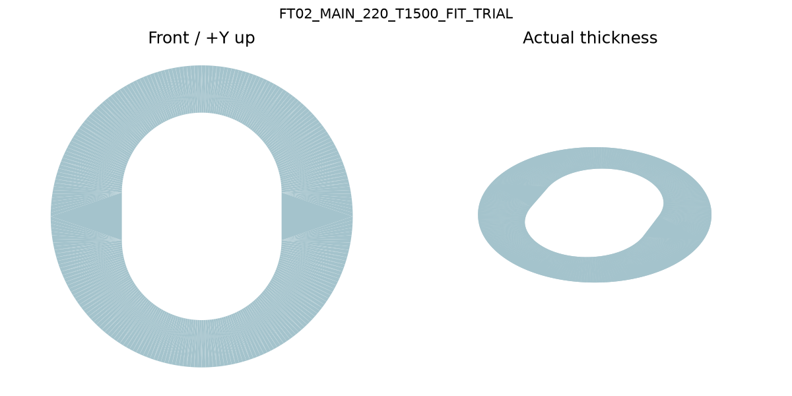

Order one pair; choose one material route
Recommended first trial: one clear acrylic main plate and one clear diverter. The broad upright main opening preserves access; the trial resolves real contact before metal finishing or permanent installation.

Upload one file per part, quantity1 each
CLEAR_FIT_TRIAL/FT02_MAIN_220_T1500_FIT_TRIAL_PONOKO_K020_CUT.dxf
CLEAR_FIT_TRIAL/FT02_DIV_124_T1500_FIT_TRIAL_PONOKO_K020_CUT.dxf
Select Clear Acrylic1.50 mm and Cutting. These paths already allow0.20 mm nominal kerf; no second compensation.
Real comparison
$43.79 clear pair vs $80.47 stainless pair, ordinary delivery included; estimated26 October2026. Tax not separately shown. Metal1.52 mm is1.84x, but diverter is AS CUT; its deburring/cosmetic finishing cost remains open. Metal-first is reasonable only with that work arranged. See ponoko/quotes.json.
Why no fixed bolt tabs?
The measured mounting layout was evaluated. Tight tabs conflict with captured rods; larger holes add movement beyond the extra gasket reserve. Center with the removable front border guide. Plain access leaves the real factory attachments adjustable.
Bring to the visit
Bring the pair, original trim and PLUMBER_START_HERE. Check full gasket contact, support, cover/handle engagement, both plates together and drain before sealing. Obtain the optional RF01 form only if support is missing. Quotes are saved; nothing purchased.